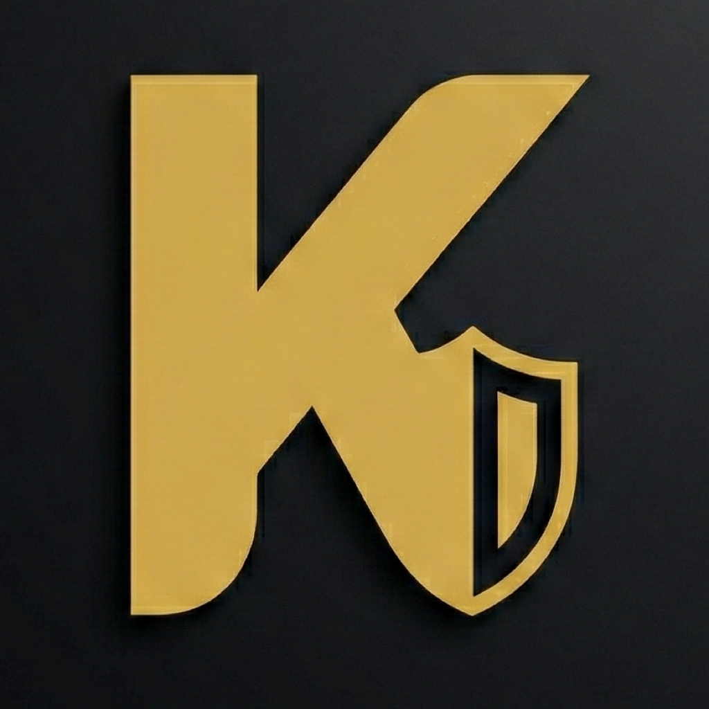

KyberChat is engineered for the future. We utilize Post-Quantum Cryptography (PQC) to ensure that your private conversations remain secure even against the emerging threat of quantum computing. By implementing lattice-based cryptographic algorithms, we provide a "Quantum-Resistant" shield for every message sent on our platform.
To comply with global online safety standards and age assurance regulations, KyberChat is strictly limited to users 18 years of age or older. By using this service, you represent and warrant that you meet this age requirement. KyberChat does not knowingly collect data from or provide services to minors.
As a product containing advanced encryption, KyberChat is subject to the following regulatory frameworks:
We take security seriously. If you discover a potential vulnerability within our encryption implementation or infrastructure, please contact our security team immediately at bugs@kyberchat.com. We are committed to the coordinated disclosure of security flaws to protect our user base.